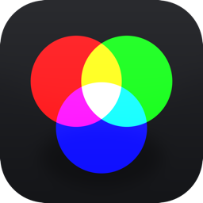

Drop your 3 photos here
PNG, JPEG, TIFF or BMP
Latest version
Trichr-o-matic is an app designed for trichrome photography. From three black and white shots to the recomposed color image, its complete set of tools keeps every step simple: import, align, edit and export your photos with ease.
macOS 12 Monterey or later · Windows 10 or 11 (64-bit)
First launch on Mac
If macOS says the app “is damaged”, run this in Terminal, then open it again:
xattr -cr /Applications/Trichr-o-matic.app
First launch on Windows
Exported at full resolution.